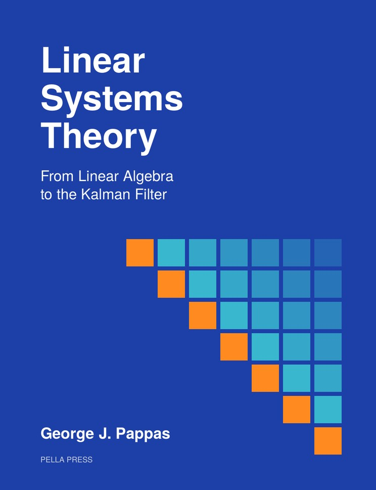

Pella Press · Forthcoming January 1, 2027
Linear Systems Theory
From Linear Algebra to the Kalman Filter
State-space theory in the time domain, for graduate students and researchers in control, robotics, signal processing, and machine learning. Linear algebra is the only prerequisite.
Free PDF and paperback from January 1, 2027
About the Book
- Twenty-six chapters, from linear algebra to LQG control
- Stability, controllability, observability and realization
- Feedback design, LQR and the Kalman filter
- More than 300 worked examples and 400 exercises
- Built on ESE 5000 at Penn, taught since 2001
Contents
Part I · Linear Algebra
1Introduction to Vector Spaces
2Introduction to Linear Maps
3Least Squares Theory
4Matrix Decompositions
Part II · Linear Systems
5Linear System Models
6Linear Systems and Functions of a Matrix
7The Response of Continuous-Time Linear Systems
8The Response of Time-Varying Linear Systems
Part III · Stability
9Lyapunov Stability
10Stability of Linear Time-Invariant Systems
11Stability of Time-Varying Linear Systems
12Input–Output Stability
Part IV · Controllability and Observability
13Controllability
14Observability
15The Kalman Decomposition
16Realization and Model Reduction
Part V · Feedback Design
17Eigenvalue Placement by State Feedback
18State Observers and Output Feedback
19Output Regulation
Part VI · Optimal Control
20The Finite-Horizon Linear Quadratic Regulator
21Infinite-Horizon LQR and the Algebraic Riccati Equation
22Continuous-Time LQR
Part VII · Stochastic Control and Estimation
23Linear Quadratic Stochastic Control
24Optimal Linear Estimation
25The Kalman Filter
26Linear Quadratic Gaussian Control
Afterword: Beyond Linear Systems · Notes and References · Index
For Instructors
Solutions to all exercises and lecture slides for every chapter, in PDF and LaTeX, are available to instructors at accredited institutions. Email pellapressbooks@gmail.com and say which course you plan to use the book for.
How to Cite
George J. Pappas, Linear Systems Theory: From Linear Algebra to the Kalman Filter. Pella Press, 2027. ISBN 979-8-9984760-0-6. doi: 10.5281/zenodo.23087184.
BibTeX
@book{pappas2027linear,
author = {George J. Pappas},
title = {Linear Systems Theory: From Linear Algebra to the Kalman Filter},
publisher = {Pella Press},
year = {2027},
isbn = {979-8-9984760-0-6},
doi = {10.5281/zenodo.23087184},
url = {https://doi.org/10.5281/zenodo.23087184}
}